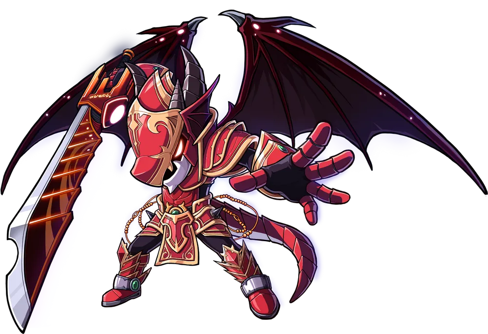

DarkKnight

SoulMaster

Hero

Mihile
-
Paladin
- 
Kaiser
다크나이트
직업군: 전사 (Warrior)
무기: 창 (Spear), 폴암 (Polearm)
특징: 스피어 퓨리와 다크 임페일로 강력한 공격을 가하며, 하이퍼 바디와 비홀더로 파티 지원과 HP 회복이 가능합니다. 리인카네이션으로 사망 후
부활하여 높은
생존력을 자랑합니다.
소울마스터
직업군: 전사 (Warrior)
무기: 소울 슛 (Soul Shooter)
특징: 소울마스터는 빠르고 연속적인 공격이 특징이며, 소울 어썰트와 같은 기술을 통해 강력한 데미지를 줄 수 있습니다. 소울 가드와 소울 링크를
활용하여 자신과 파티원을 보호할 수 있습니다.
히어로
직업군: 전사 (Warrior)
무기: 한손검 (One-Handed Sword), 두손검 (Two-Handed Sword), 두손도끼 (Two-Handed Axe)
특징: 히어로는 강력한 근접 공격 기술을 보유하며, 인레이지와 같은 스킬을 사용하여 공격력을 극대화합니다. 또한, 콤보 어택 시스템을 활용하여 연속적인
공격을 할 수 있습니다.
미하일
직업군: 전사 (Warrior)
무기: 한손검 (One-Handed Sword)
특징: 미하일은 방어와 생존력에 특화된 직업으로, 소울 실드와 같은 방어 스킬을 통해 파티의 방어력을 높일 수 있습니다. 소울 링크와 같은 스킬을 통해
파티원에게도 이로운 효과를 부여할 수 있습니다.
팔라딘
직업군: 전사 (Warrior)
무기: 한손검 (One-Handed Sword), 두손검 (Two-Handed Sword), 두손둔기 (Two-Handed Mace)
특징: 팔라딘은 높은 방어력과 생존력을 바탕으로 적의 공격을 흡수하며, 다양한 속성 공격을 통해 다채로운 전투를 펼칩니다. 디바인 쉴드와 같은 스킬로
생존력을 높일 수 있습니다.
카이저
직업군: 전사 (Warrior)
무기: 대검 (Great Sword)
특징: 카이저는 변신을 통해 강력한 공격력을 발휘할 수 있으며, 윙 비트와 기가 슬래셔 같은 스킬로 넓은 범위의 적을 처리할 수 있습니다. 모프
게이지를 채워 더 강력한 형태로 변신할 수 있습니다.